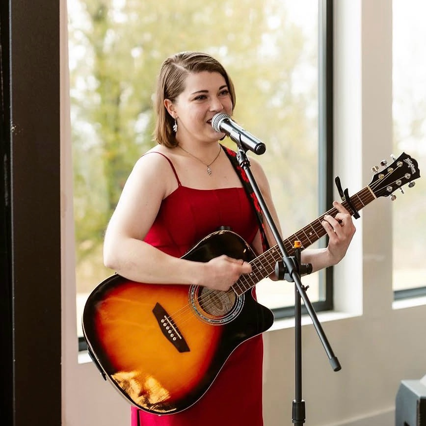

Testimonials
← Back to Home"Aryn is a wonderful woman to work with. She is a kind, energetic and open minded person, always willing to give honest feedback, but also step away from her personal preferences and meet you artistically where you are while searching for what you are trying to achieve. She is reliable, skillful and has plenty of experience making her own music and working with other industry professionals."
"I have had the privilege to work with Aryn for over 3 years and I am so thankful for our time. Aryn has an incredible ability to break down songs. She always has a great viewpoint on any genre or style of song. One thing I loved that she did was that she would ask me to defend my choices in a song. This made every melody, lyric, and chord choice have intention. Aryn does not only give feedback but she pushes you to be a better writer. I also feel encouraged after meeting with her and always leave with more vision and excitement to write!"

"I’ve known Aryn since I was about 15 years old and had a budding desire to improve my songwriting. She graciously took me under her wing and showed me the ropes on songwriting. This included lyric writing, recording, composing, most importantly, rewriting. Early on in our time together she shared with me the importance of learning how to take criticism and separate it from self worth. A monumental lesson I learned as a songwriter and performer. Now over 10 years later I am slowly building a career as a musician, writing performing and teaching my own students the same values and core beliefs. I can confidently say that were it not for God’s grace in bringing Aryn into my life I would not have the courage to pursue the life I love. I am ever so grateful for her and cannot recommend her enough."